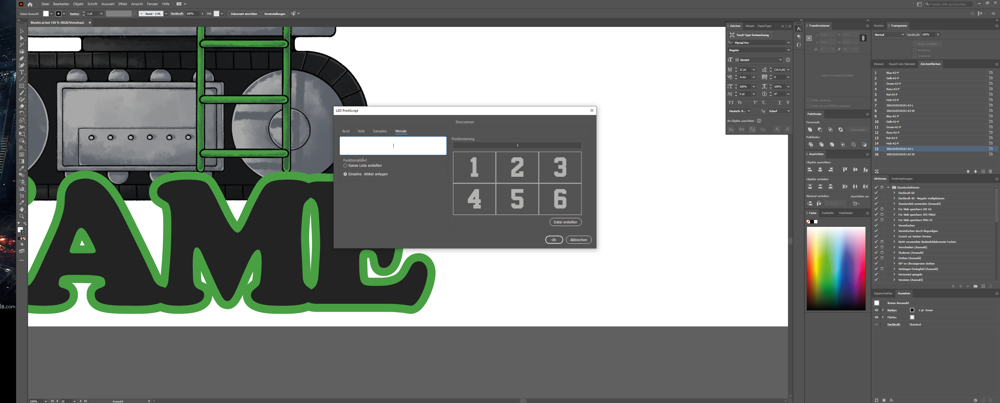

Illustrator Scripting
Zur automatischen Erstellung verschiedener personalisierten Druckdaten habe ich ein umfangreiches Script programmiert. Dieses generiert anhand der Bestelldaten und den rohen Vorlagedateien für den Auftrag nutzbare Dateien. Dabei greifen die jeweiligen Produktionsschritte Druck, Laserschnitt und Bekleben auf dafür abgestimmte Endformate zu.